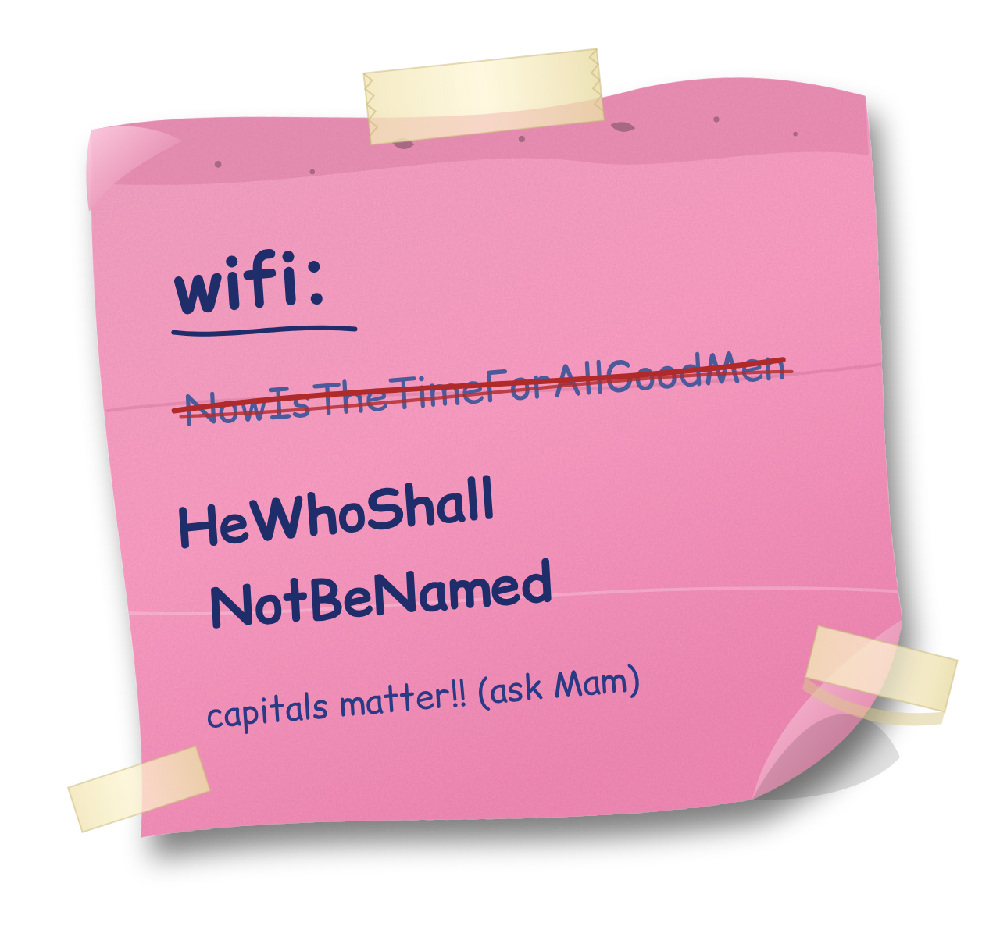
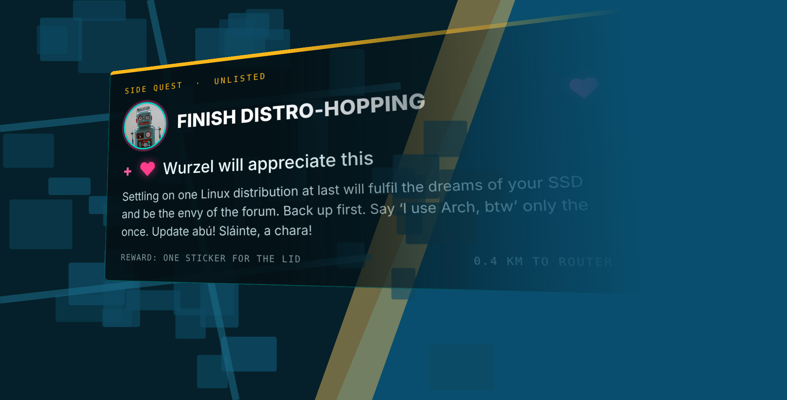

Ubuntu is the gateway drug. Somebody you love has an old laptop that's barely clinging on, and you can't bring yourself to bin it. So you swap the hard drive for an SSD, put Ubuntu on it, and ten minutes later it boots faster than the day it was bought. You're in. You are now the family IT department, unpaid.
There's a prettier cousin too, elementary OS, which is Linux wearing a Mac costume. I couldn't remember its name for a good five minutes and kept calling it 'the pretty one'. Underneath, it speaks exactly the same dialect.
Then one day the friendly icons run out and somebody says just open a terminal. Good news: you need about a dozen commands, and I've animated the lot. The catch, and the reason this is on a security blog, is that every one of them runs with your authority. Learn the commands, and learn which ones to treat with respect.
What it actually is
Ubuntu is a free, friendly, well-patched operating system, and the terminal is just a way of giving it instructions in writing. Day to day you'll update it, move around its folders, look inside files, install and remove software, and check it's healthy. None of that is hard. The security part is knowing that a terminal does exactly what it's told, as whoever told it.
01How it works
- Update first
sudo apt update, thensudo apt upgrade. Patches are the cheapest defence you'll ever buy. - Look before you act
pwdtells you where you are,lsshows what's here. Most disasters start in the wrong folder. - Ask nicely
sudoborrows admin power for one command. Read the whole line before you press Enter. - Lock the door
sudo ufw enableturns the firewall on. Ubuntu ships with it off.
→ Four habits cover most of an ordinary day, and most of the risk.
Eight scenes you'll see every week
Each one is a real job from a normal week with an old laptop and a new SSD. They play as they scroll into view, and there's a replay under each. (Output simplified for the page.)


Four to keep in your head
If you remember nothing else from the animations, remember these:
sudo apt updatesudo apt upgrade
pwdlscd Documents
sudo apt install htopdf -hfree -hsudo ufw status
The one-page cheat sheet
Print it, stick it inside the lid, and let the muscle memory build. Two tricks worth more than any command: press Tab to finish a file name for you, and press the ↑ key to bring back the last command. The amber rows are the ones that rescue you when the internet goes down; there's a whole post on that, Command Not Found.
| Command | What it does |
|---|---|
| ip a | Internet not working? Start here. Shows your IP address. A 169.254.x.x address means you never got a real one. |
| ip route | Look for the default via line. That's your way out. |
| ping -c 4 8.8.8.8 | Can you reach the internet by number? The -c 4 stops it after four. |
| sudo apt update | Do this first, every week. Refreshes the list of available updates. |
| sudo apt upgrade | Then install them. |
| pwd | Where am I? |
| ls | What's in here? |
| cd Documents | Go into a folder. cd .. goes back up. |
| mkdir name | Make a new folder. |
| cp a b | Copy a file. |
| mv a b | Move it, or rename it. |
| cat file | Show what's inside a file. |
| grep word file | Find a word in a file. |
| chmod 600 file | Make a file private to you. |
| man ls | The manual for any command. q quits. |
| df -h / free -h | Disk space, then memory. |
| sudo ufw status | Is the firewall on? |
| rm file | Deletes for good. No Trash, no undo. Read twice. |

And if you'd like the Mac look without the Mac price, have a go at elementary OS. Different wallpaper, same terminal, same commands, same rules.
A command from a forum reply or a video comment runs with your authority, and with sudo in front it runs as the boss of the machine. Read it, work out what every part does, and if you can't, don't run it. Be warier still of anything that pipes a download straight into a shell.
02Why it's dangerous
- Sudo is the master key. One careless line with sudo in front can change or wipe almost anything, and it won't ask twice.
- Pasted commands run as you. The terminal can't tell a helpful tip from a hostile one. It just does it.
- Old Ubuntu is a known target. Each LTS release gets five years of free security updates. After that, the holes stay open.
- rm has no bin. Delete from the terminal and it's gone. There's no Trash to rescue you.
03How you stop it
- Update weekly, and move off a release before its support runs out.
- Read before you run. Know what every word and flag does, especially after sudo.
- Use a normal account and let sudo ask when it's genuinely needed. Don't live as root.
- Turn the firewall on:
sudo ufw enable, then check it withsudo ufw status. - Encrypt the disk when you install, keep a backup, and wipe the old drive before it leaves your hands.
An Eriu Technology briefing. Awareness and defence only. The terminal is a very good servant and a very literal one.